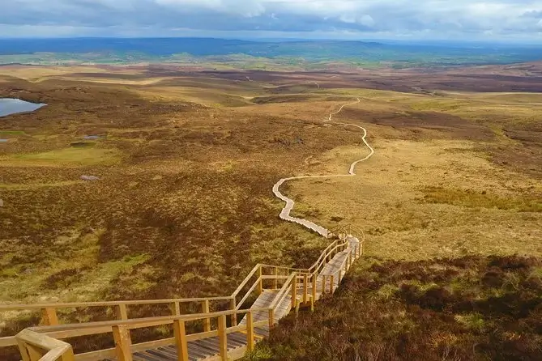
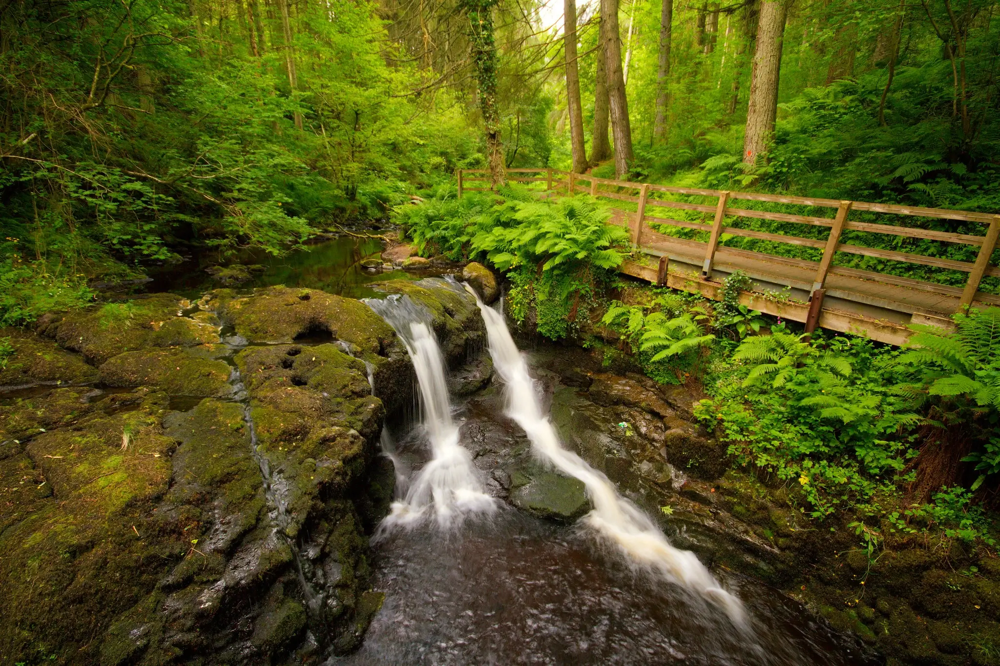
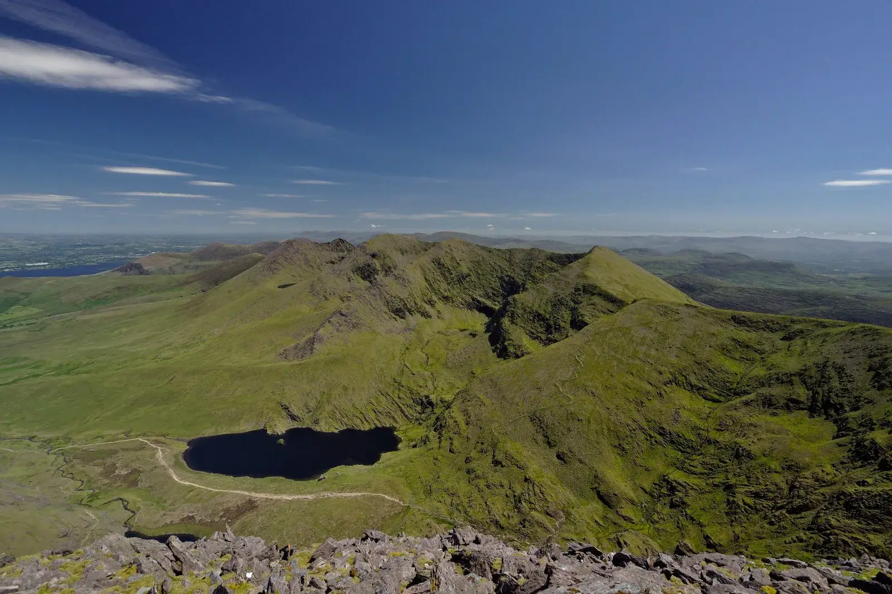

Cuilcagh Legnabrocky Trail, Fermanagh
- Difficulty: Easy
- Length: 7.2 Km
Commonly referred to as "The Stairway to Heaven", this bog landscape was made traverseable thanks to a walkway built in 2015. The area is home to the Marble Arch caves, which are well worth visiting along your journey. As you reach the 2,185ft summit of Cuilcagh mountain, the view of Co. Fermanaghs expansive landscape is unlike any other. We recommend this trail to first time hikers as the boardwalk has made the trail very easy to follow, while the climb to the summit still holds a small challenge to get you acquainted to hiking larger trails.
Glenariff Forest Park, Antrim
- Difficulty: Moderate
- Length: 9.6 Km
Glenariff Forest Park is the perfect trail for hikers who prefer a woodland environment. Beginning at the bottom of a watery ravine, this trail takes you on numerous steep ascents to the edge of the Antrim Plateau. The long and winding climb will prove difficult for inexperienced hikers, but for those with a couple hikes under their belt, the views are very rewarding. We recommend taking this journey in spring, so you can enjoy the woodlands natural beauty in full bloom.
Carrauntoohil Hike, Kerry
- Difficulty: Hard
- Length: 12.7 Km
We couldn't make our top 3 list without the infamous Carrauntoohil mountain hike. This trail, containing Ireland's highest mountain peak at 3,407ft, is not for the faint of heart. The difficulty of this trail is rewarded with gorgeous views of the MacGillycuddy Reeks mountain range as well as the Killarney lakes. The ascent to the peak can take between 4 and 6 hours, with the most direct route being up "The Devil's Ladder". Truly a trail for those who wish to conquer Ireland's trails!